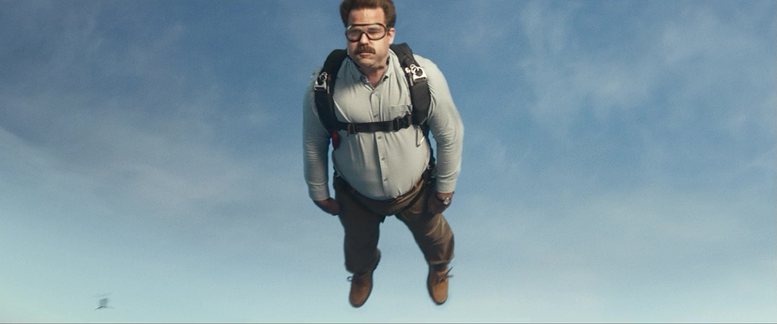

Aspect Ratio
16:9
Color Palette
Weedmaps "High Teal" & "Peppercorn".
An example of possible production design in the palette.
Lighting Style
Scene 1
Sun is harshly hitting Jon.

Scene 2
Direct mid-day sunlight streaming on the sides of the car. Soft high-key lighting for faces.
Lens Choice
24mm
Wide Angle lens to enhance the adrenaline and immersion.
50mm
Medium lens to emphasize the feeling that everything is normal.
135mm
Long lens to capture details close up.
Camera Movement
Scene 1
Handheld camera work to establish the urgency of his landing.
Scene 2
Locked on a tripod to create a visual contrast and because the scene is much lower energy.